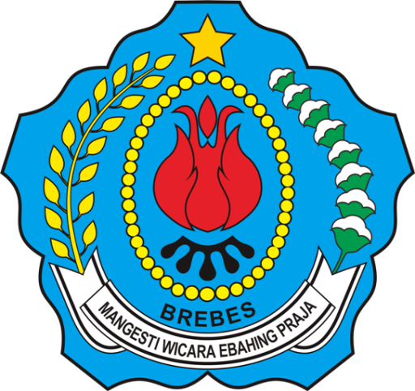

|  |
dan
WebGis Ini adalah hasil kerjasama antara pemerintah Desa Kaligiri dan Universitas Peradaban Bumiayu, dalam rangka mempermudah pendataan, monitoring dan evaluasi Rumah Tidak Layak Huni(RTLH) di Desa Kaligiri. Web GIS ini dibuat menggunakan js,bootstrap,jQuery dan ajax. Seluruh isi dari Web GIS ini menjadi tanggung jawab pemerintah Desa Kaligiri, sekaligus sebagai pihak yang memiliki hak untuk menyiarkan dan mempublikasikan Web GIS ini.